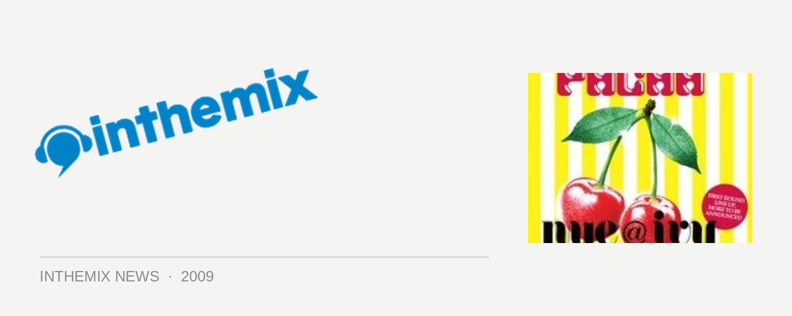

Pacha NYE reveals local lineup
The mighty and glamorous Pacha brand will be dropping into the equally mighty and glamorous surrounds of the Ivy on New Years Eve, featuring a massive international lineup of Swedish House Mafioso Sebastian Ingrosso, Claude VonStroke, Sidney Samson and Kenny Dope. To lift anticipation levels even further, the organisers have also just revealed the impressive list of local DJs who will be partaking on the lineup, including the Aston Shuffle, Goodwill, Mo Funk, Carl Kennedy and more.
It’s also getting closer to when we’ll be finding out who the ‘very special international headliner’ will be, as Pacha will be going public next Monday December 7th. ITM can assure you, this one will be big so make sure you’re back at the site.
Pacha debuts at Ivy this New Years Eve, tickets on sale now at ITM. Check out the local lineup below:
Goodwill
The Aston Shuffle
Carl Kennedy
Mobin Master
John Glover
Pete Dolso
James Taylor
Jeff Drake
Ben Morris
Mo Funk
Johnny Gleeson
Yolanda Be Cool
Trent Rackus
Yogi & Husky
Liam Sampras
Dj Cassette
Tass
Dazzla